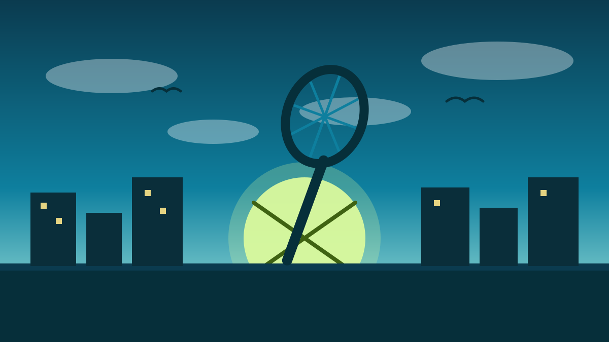

TennisFest Medan 2026: Turnamen Tenis Rasa Festival, Wali Kota All-In! 🎾
📅 Kamis, 8 Oktober 2026⏱️ 1 menit baca
1 / 6

🏙️ MEDAN
Turnamen Tenis Rasa Festival, Wali Kota All-In!
Main tenis sambil jajan di bazar UMKM dan ketemu legenda — geser buat spill lengkapnya →
2 / 6
🏛️
Wali kota kasih lampu hijau
Wali Kota Medan Rico Tri Putra Bayu Waas nerima audiensi panitia di Balai Kota, Selasa (6/10/2026), dan nyatakan dukungan penuh buat TennisFest Medan 2026.
Katanya, event ini bisa jadi jalan buat bikin warga Medan makin cinta olahraga tenis.
3 / 6
📍
Kapan dan di mana?
Turnamennya jalan tiga hari: 23–25 Oktober 2026 di Lapangan Kebun Bunga, Medan. Temanya "Tenis untuk Semua".
Ketua panitia Saif Adli Anwar bilang slot pendaftaran dari kuota 200+ peserta udah ~75% terisi — antusiasmenya gas pol.
4 / 6
🌍
Bukan cuma anak Medan
Pesertanya nggak cuma dari pemain lokal — ada juga petenis asing dari India dan Malaysia yang ikut turun bertanding.
Plus ada bazar UMKM dan panggung hiburan, jadi yang nonton doang pun tetap ke-entertain.
5 / 6
⭐
Belajar langsung dari legenda
Plot twist seru: coaching clinic-nya dibawain legenda tenis Indonesia Yayuk Basuki. Bayangin, diajarin langsung sama mantan petenis top dunia.
Buat yang pengen serius di tenis, ini kesempatan yang jarang banget kejadian di Medan.
6 / 6
🤔
Efeknya ke lo apa?
Yang penasaran sama tenis bisa coba gratis kenal lapangan, sekalian hunting kuliner di bazar UMKM. Yang udah bisa main, masih keburu daftar sebelum kuota penuh.
Intinya: olahraga yang biasanya kelihatan "eksklusif" lagi dibikin ramah buat semua orang — sayang dilewatin.
👆 geser kartunya
Gimana menurut lo?
🤖 Artikel ini disusun dengan bantuan AI dari berbagai sumber publik dan telah disunting manusia.